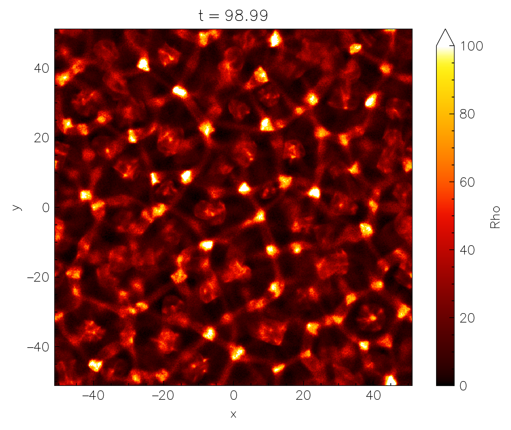
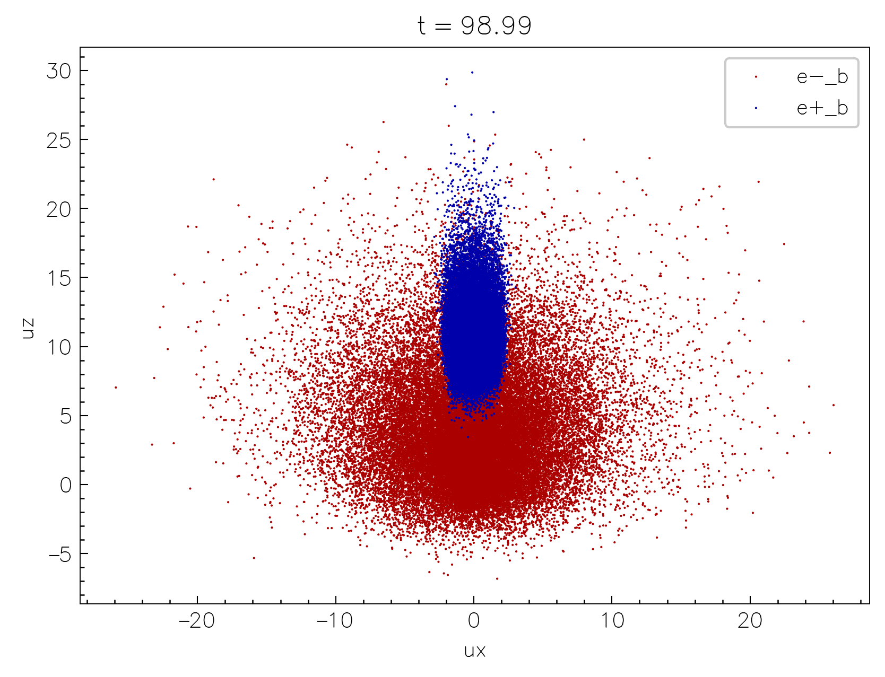

Output & visualization¶
To enable the runtime output of the simulation data, configure the code with the -D output=ON flag. As a backend Entity uses the open-source ADIOS2 library compiled in-place. The output is written in the HDF5 format, however, more formats will be added in the future.
The output is configured using the following configurations in the input file:
[simulation]
title = "MySimulation" # (5)!
# ...
[output]
format = "HDF5" # (2)!
fields = ["B", "E", "Rho_1_2", ...] # (1)!
particles = ["X_1_2", "U_3_4", "W"] # (7)!
interval = 100 # (3)!
interval_time = 0.1 # (8)!
mom_smooth = 2 # (4)!
fields_stride = 2 # (9)!
prtl_stride = 10 # (6)!
as_is = false # (10)!
ghosts = false # (11)!
- fields to write
- output format (current supported: "HDF5", or "disabled" for no output)
- output interval (in the number of time steps)
- smoothing stencil size for moments (in the number of cells) [defaults to 1]
- title is used for the output filename
- stride used for particle output (write every
prtl_stride-th particle) [defaults to 100] - particle quantities to write
- output interval in time units (overrides
intervalif specified) - stride used for field output (write every
fields_stride-th cell) [defaults to 1] - write the field quantities as-is (without conversion/interpolation) [defaults to false]
- write the ghost cells [defaults to false]
Output is written in the run directory in a single hdf5 file: MySimulation.h5. All the steps are written in the same file, and the time step is stored as an attribute of the dataset: Step0, Step1, Step2, etc. Thus to access, say, the Ez field at the 10th output step (not the same as the simulation timestep), one has to access the dataset /Step9/Ez in the hdf5 file. If one needs the X1 coordinates of particles of species 2 at the 5th output step, one has to access the dataset /Step4/X1_2 in the hdf5 file, etc.
Following is the list of the supported fields
| Field name | Description | Normalization |
|---|---|---|
E |
Electric field (all components) | \(B_0\) |
B |
Magnetic field (all components) | \(B_0\) |
D |
GR: electric field (all components) | \(B_0\) |
H |
GR: aux. magnetic field (all components) | \(B_0\) |
J |
Current density (all components) | \(4\pi q_0 n_0\) |
Rho |
Mass density | \(m_0 n_0\) |
Charge |
Charge density | \(q_0 n_0\) |
N |
Number density | \(n_0\) |
Nppc |
Raw number of particles per cell | dimensionless |
Nppc |
Raw number of particles per cell | dimensionless |
Tij |
Energy-momentum tensor (all components) | \(m_0 n_0\) |
divE |
Divergence of \(E\) | arb. units |
divD |
GR: divergence of \(D\) | arb. units |
A |
GR: 2D vector potential \(A_\varphi\) | arb. units |
and particle quantities
| Particle quantity | Description | Units |
|---|---|---|
X |
Coordinates (all components) | physical |
U |
Four-velocities in the orthonormal frame (all components) | dimensionless |
W |
Weights | dimensionless |
Refining fields and particle quantities for the output
One can specify particular components to output for the Tij fields: T0i will output the T00, T01, and T02 components, while Tii will output only the diagonal components: T11, T22, and T33. One can also specify the particle species which will be used to compute the moments or output particle quantities: Rho_1 (density of species 1), N_2_3 (number density of species 2 and 3), Tij_1_3 (energy-momentum tensor for species 1 and 3), etc. Or for the particle quantities: X_1_2 will write the coordinates of particles of species 1 and 2 only. If no species are specified, the moments will be computed for all the species with \(m_s \ne 0\).
All of the vector fields are interpolated to cell centers before the output, and converted to orthonormal basis. The particle-based moments are smoothed with a stencil (specified in the input file; mom_smooth) for each particle.
Can one track particles at different times?
Particle tracking (outputting the same batch of particles at every timestep) is unfortunately not yet implemented, and will unlikely be available due to limitations imposed by the nature of GPU computations.
nt2.py¶
To make the life easier, the nt2.py script is provided with the Entity source code in the vis/ directory (the requirements are also provided in the vis/requirements.txt). nt2.py uses the dask and xarray libraries together with h5py and h5pickle to lazily load the output data and provide a convenient interface for the data analysis and quick visualization.
To start using nt2.py, it is recommended to create a python virtual environment and install the required packages:
python3 -m venv .venv
source .venv/bin/activate # (1)!
pip install -r vis/requirements.txt # (2)!
- Now all the packages will be installed in the
.venvdirectory which you can remove at any time without affecting the system. - If you plan to use jupyter you might also need to run the following
pip install jupyterlab ipykernel.
Now simply import the nt2 module and load the output data:
import nt2 # (1)!
data = nt2.Data("MySimulation.h5")
- If working outside the
vis/directory you might need to add thevis/to your path:import sys; sys.path.append("vis")in order to importnt2.
Note, that even though the h5 file can be quite large, the data is loaded lazily, so the memory consumption is minimal; data chunks are only loaded when they are actually needed for the analysis or visualization.
Accessing fields¶
Data selection is conveniently done with the sel and isel methods for the xarray Datasets (more info). For example, to select the Rho field around physical time t=98, one can do:
data.Rho.sel(t=98, method="nearest") # (1)!
- The
method="nearest"is used to select the closest time step to the requested time.

We can then plot the selected data using the plot method of the xarray Dataset:
data.Rho\
.sel(t=98, method="nearest")\
.plot(
norm=mpl.colors.Normalize(0, 1e2), # (2)!
cmap="jet") # (1)!
- The
normandcmaparguments are used to set the colorbar limits and the colormap just like in normalmatplotlibcontext. - Make sure to also
module load matplotlib as mpl.
If the resolution is too high, one can also coarsen the data before plotting:
data.Rho\
.sel(t=98, method="nearest")\
.coarsen(x=16, y=4).mean()\
.plot(
norm=mpl.colors.Normalize(0, 1e2),
cmap="jet")
or downsample:
data.Rho\
.sel(t=98, method="nearest")\
.isel(x=slice(None, None, 16), y=slice(None, None, 4))\ # (1)!
.plot(
norm=mpl.colors.Normalize(0, 1e2),
cmap="jet")
- The difference between
iselandselis thatiseluses the integer indices along the given dimension, whileseluses the physical coordinates.

One can also do more complicated things, such as building a 1D plot of the evolution of the mean \(B^2\) in the box:
data.Bx**2 + data.By**2 + data.Bz**2\
.mean(dim=["x", "y"])\
.plot()
or make "waterfall" plots, collapsing the quantity along one of the axis, and plotting vs the other axis and time:
(data.Rho_2 - data.Rho_1)\
.mean(dim="x")\
.plot(yincrease=False)
Accessing particles¶
Particles are stored in the same data object and are lazily preloaded when one calls nt2.Data(...), as we did above. To access the particle data, use data.particles, which returns a python dictionary where the key is particles species index, and the value is an xarray Dataset with the particle data. For example, to access the x and y coordinates of the first species, one can do:
data.particles[1].x
data.particles[1].y
The shape of the returned dataset is number of particles times the number of time steps. To select the data at a specific time step, one can use the same sel or isel methods mentioned above. For example, to access the 10-th output timestep of the 3-rd species, one can do:
data.particles[3].isel(t=10).x

Scatter plotting the particles on a 2D plane is quite easy, since xarray has a built-in plot.scatter method:
species_3 = data.particles[3]
species_4 = data.particles[4]
species_3.isel(t=-1)\
.plot.scatter(x="x", y="y",
label=species_3.attrs["label"])
species_4.isel(t=-1)\
.plot.scatter(x="x", y="y",
label=species_4.attrs["label"])
isel indexing
isel(t=-1) selects the last time step.

Or one can plot the same in phase space:
species_3.isel(t=-1)\
.plot.scatter(x="ux", y="uy",
label=species_3.attrs["label"])
species_4.isel(t=-1)\
.plot.scatter(x="ux", y="uy",
label=species_4.attrs["label"])
nt2 documentation
You can access the documentation of the nt2 functions and methods of the Data object by calling nt2.<function>? in the jupyter notebook or help(nt2.<function>) in the python console.